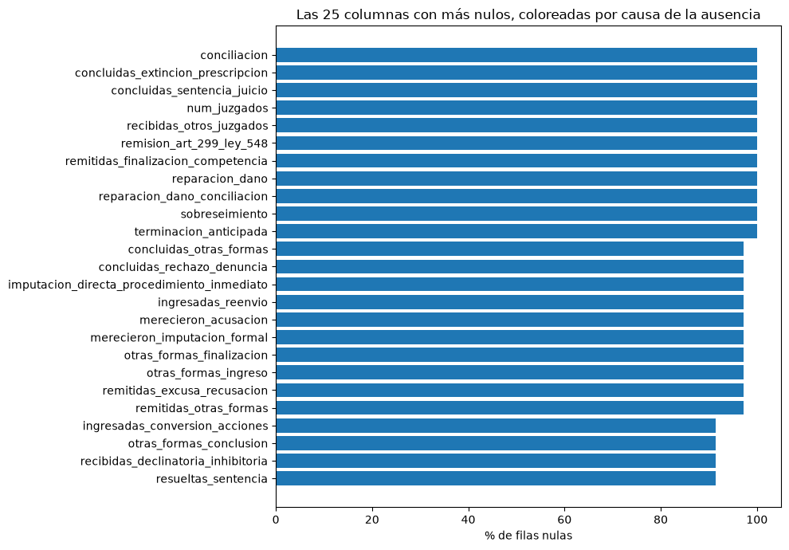
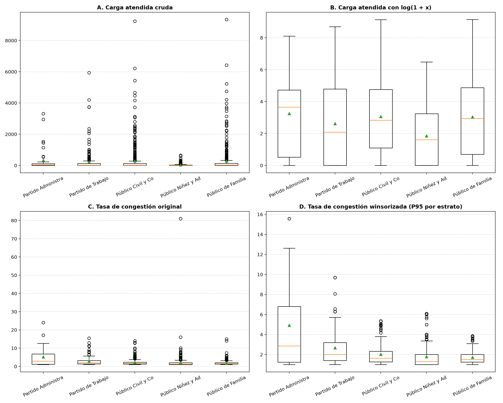
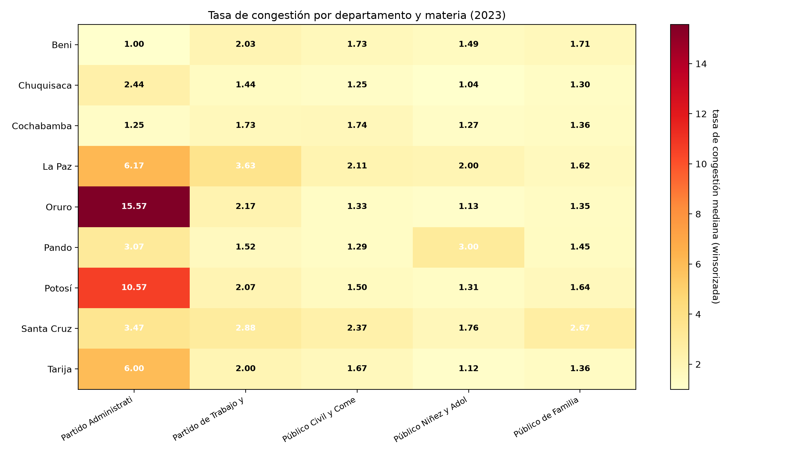

Proyecto de Análisis de Datos · Bolivia · gestión 2023
Congestión judicial en Bolivia
De un PDF de 774 páginas a datos que se pueden defender: extracción, manejo de nulos y outliers, y lo que dicen los datos.
Andrés Maximiliano Espinoza Romero · Andrés Gabriel Maydana García · Maximiliano Gómez Mallo
Fuente: Consejo de la Magistratura de Bolivia, Anuario Estadístico Judicial 2023
El problema
El dato existe, pero nadie lo puede usar
El Consejo de la Magistratura publica cada año las estadísticas de todos los juzgados del país en un PDF de 774 páginas: sin Excel, sin CSV, sin datos abiertos.
El Índice de Congestión Judicial del CEJA (2025) dejó a Bolivia fuera de su ranking por falta de datos posteriores a 2022, y recomendó desagregar por materia y territorio, cosa que el índice no hace.
Y la demora importa: una parte muy grande de las personas presas en Bolivia espera una sentencia.
Objetivo e hipótesis
¿Dónde y en qué es lenta la justicia?
Objetivo
Construir un dataset abierto, reproducible y verificable del Órgano Judicial, y medir congestión y duración por materia, tipo de proceso y territorio.
Hipótesis
La demora no es homogénea: el promedio nacional esconde materias rápidas y materias que tardan años. Si es así, «la justicia es lenta» no alcanza: hay que decir dónde y en qué.
(ámbito, ciudad o distrito, materia, tipo de proceso) — por ejemplo, «procesos ordinarios, materia civil, ciudad de Sucre».
Es lo más fino que publica el Anuario. No hay datos por juzgado individual: fue una premisa del proyecto que hubo que corregir.
Parte 1
Los datos
De dónde salen, cómo se leyeron y cómo se interpretan.
Origen
Qué se extrajo del Anuario
| Cuadros | Qué contienen | Págs. |
|---|---|---|
| Cap. 5 y 6 | causas por tipo de proceso (capitales y provincias): la variable que no está en ningún otro lado | 525 |
| 9.1.x | movimiento de causas por materia, series 2007–2023 | 12 |
| 4.1.x | juzgados, tribunales, salas y conciliadores | 10 |
| 14.1.x | personal: ítems y remuneración | 5 |
| 13.1.x | procesos disciplinarios | 3 |
| Total | de 774 páginas | 554 |
El resto: 30 gráficas, 10 mapas, 76 páginas sin tabla y 104 páginas de cuadros fuera de alcance (segunda instancia, agroambiental, conciliaciones…).
El PDF tiene capa de texto: se leyó con pdftotext, sin OCR. Ninguna cifra pasó por reconocimiento de imagen.
Toda fila guarda cuadro_origen y pagina_pdf: cualquier número se puede verificar a mano en el PDF.
Origen
Un PDF de tablas no es una tabla
- Punto como separador de miles:
86.285son 86285. - Texto impreso en vertical (ORDINARIO, MONITOREO) que se pega a las filas.
- Rótulos partidos en tres líneas con los números en el medio.
- El mismo número de cuadro usado para dos cuadros distintos (el 6.3.1.4 es de capitales y de provincias).
- Llamadas a nota al pie pegadas al nombre:
Yapacani1. - Erratas:
INSTRUCCÓN,OTROS VOLUNATRIOS.
23 trampas documentadas en total.
- El dato de origen no se sobrescribe: toda interpretación va en una columna aparte.
- Nada se interpola: lo que no se puede leer queda vacío y se registra.
- Las discrepancias del Anuario se registran, no se corrigen.
- Los encabezados no se inventan.
Interpretación
Cómo leer una fila: las cinco cantidades
pendientes_inicio | abiertas el 1 de enero |
ingresadas | entraron en el año |
atendidas | todo lo que tuvo en manos |
resueltas | cerradas en el año |
pendientes_fin | abiertas el 31 de diciembre |
Ejemplo real (cuadro 5.1.1.1, p. 121): procesos ordinarios civiles de Sucre. 2.397 atendidas, 1.286 resueltas, 1.111 pendientes al cierre. Cerró menos de lo que entró: acumula mora.
pct_resueltas del Anuario es resueltas ÷ atendidas. No es la tasa de resolución, que es resueltas ÷ ingresadas.
Los datos
Tres capas: del PDF a la tabla analítica
data/processed)Por qué no una sola tabla gigante
Las tablas tienen grano distinto. Unir movimiento con apelaciones multiplica las filas por 743; la columna atendidas pasaría de 1,5 millones a 81 millones. La base solo recibe uniones N:1 verificadas: sigue teniendo 1.997 filas.
Seis auditorías contra el PDF
- Geografía: departamento de 0 % a 100 %.
- Materias: 11 equivalencias; 4 sin fusionar porque el Anuario invierte los rótulos.
- Juzgados: sumar el cuadro 4.1.1 da 2.422; el real es 846.
- 95 «duplicados» que eran etapas penales distintas.
- 87 rótulos rotos reparados, sin reglas globales.
Validación
¿Cómo sabemos que la extracción está bien?
El Anuario publica las mismas cifras dos veces, en capítulos distintos, y las leyeron dos parsers que no se conocen.
La suma de formas de ingreso da atendidas en 2.386 de 2.386 filas.
veces que el Anuario no cierra consigo mismo. Registradas con cuadro y página, ninguna corregida: son un hallazgo sobre la fuente.
Ejemplo: en el 9.1.1 falta una causa (44.992 publicadas, 23.611 + 21.382 = 44.993). Cruzando cuadros se ubica en trabajo de El Alto.
Alcance del análisis
Qué se analiza: la mitad no penal
Causas atendidas en la tabla analítica: 335.472 de 706.485.
Las materias penales no publican causas resueltas: publican sobreseimientos, imputaciones, salidas alternativas. Las fórmulas del CEJA no se les pueden aplicar tal cual.
| Tipo de fila | Filas |
|---|---|
proceso → se analiza | 1.655 |
accion_penal | 171 |
otro_detalle (encabezados penales) | 171 |
| Total | 1.997 |
Parte 2
Manejo de nulos
Cuántos hay, por qué existen y qué se hizo con ellos.
Nulos · el panorama
El 39 % de las celdas están vacías
67.622 celdas vacías de 173.739 (1.997 filas × 87 columnas).
40 de las 87 columnas tienen al menos un vacío; 47 están completas.
A primera vista parece un dataset «sucio». No lo es.
Columnas por causa de la ausencia
Clasificación del notebook 09 (matriz_nulos_clasificada.csv).
Nulos · por qué
Un vacío casi nunca es un dato perdido: es estructural
| Causa | Ejemplo | % de filas vacías | Por qué está vacío |
|---|---|---|---|
| materia | sobreseimiento, terminacion_anticipada | 100 % | son formas de cierre penal; en un divorcio no existen |
| materia | merecieron_imputacion_formal | 97,1 % | solo existe en los cuadros de instrucción penal |
| materia | readecuadas_ley_439 | 76,2 % | creada por el Código Procesal Civil: solo en civil |
| materia | pendientes_inicio | 24,1 % | los cuadros civiles publican las readecuadas en su lugar |
| geografía | ciudad / distrito | 46,4 % / 53,6 % | capitales se publican por ciudad; provincias por distrito: una u otra, nunca las dos |
| recursos | recurso_salas_publicadas | 51,8 % | no existen salas creadas en esa localidad |
| tipo de fila | resueltas | 14,3 % | vacía solo en las 285 filas que son encabezados penales, no procesos |
Cada vacío tiene una explicación verificable contra el PDF. En la jerga estadística no son faltantes al azar: faltan por una razón conocida, la estructura del Anuario.
Nulos · diagnóstico
Las columnas con más vacíos, por causa

Las de arriba llegan al 100 % y ninguna es un error: son columnas de layouts penales o civiles que no aplican al resto del estrato.
Nulos · tratamiento
El tratamiento: clasificar, no imputar
Qué se hizo
- Clasificar cada columna por la causa de su ausencia (notebook 09).
- Conservar el vacío: ningún valor se rellena.
- Distinguir vacío de cero: cero es «ninguna causa»; vacío es «no aplica» o «no publicado».
- Separar filas que no son procesos (
tipo_elemento_analitico) en lugar de borrarlas. - Crear
territorio: combina ciudad y distrito sin rellenar ninguna.
Por qué no las alternativas
| Alternativa | Problema |
|---|---|
| imputar con la media | inventa un «sobreseimiento» en un divorcio: una figura jurídica que no puede existir |
| rellenar con cero | afirma «ninguna causa» donde el Anuario no publica nada; cambia promedios y tasas |
| borrar filas con vacíos | casi todas las filas tienen alguno: se perdería el dataset entero |
| borrar columnas vacías | son las columnas propias de cada materia: se perdería información penal |
Nulos · en los indicadores
Los vacíos que crean los indicadores
Dividir por cero no da un número. En los 1.655 procesos:
| Indicador | Vacío cuando | Vacíos | % |
|---|---|---|---|
| tasa de resolución | no hubo ingresos | 487 | 29,4 |
| tasa de congestión | no hubo resueltas | 533 | 32,2 |
| duración estimada | no hubo resueltas | 533 | 32,2 |
| tasa de pendencia | (cero atendidas → 0) | 0 | 0 |
Se explican con estado_gestion: 415 procesos sin movimiento y 118 en trámite exclusivo (atendieron y no resolvieron nada). 415 + 118 = 533.
La primera versión asignaba tasa = 1,0 a los procesos sin causas, como «balance neutro».
Con 415 filas sin movimiento, eso arrastraba la mediana de casi todas las materias a exactamente 1,0: un número que parecía un resultado y era un artefacto de la imputación.
Regla: un cociente sin denominador es indefinido, no 1. Ahora queda vacío.
Parte 3
Manejo de outliers
Cómo se detectaron, cuántos hay y por qué no se borró ninguno.
Outliers · método
Regla de Tukey (IQR), por estrato
Q1 deja el 25 % de los valores por debajo; Q3, el 75 %. Es el criterio de los diagramas de caja: no supone una distribución normal, y estos datos están muy lejos de serlo.
Si el IQR es 0 (casi todos iguales), el límite se fija en el máximo entre Q3 + 1 y el percentil 95, para no marcar cualquier valor distinto.
Se aplicó a cuatro variables
- carga atendida y nuevas ingresadas (volumen)
- tasa de congestión y duración estimada (tasas)
Dentro de 9 estratos
materia × ámbito: cada proceso se compara solo con los de su materia y su ámbito. Son 9 y no 10 porque coactivo fiscal solo existe en capitales.
Outliers · por qué estratificar
Un umbral nacional marcaría geografía, no anomalías
Umbral nacional único
195 causas
marca 248 procesos: 169 de capital y 79 de provincia (68 % capital).
Umbral por materia × ámbito
de 35 a 901 causas
marca 244 procesos: 122 de capital y 122 de provincia.
La mediana de causas atendidas es 18 en capitales y 5 en provincias. Con un umbral único, un juzgado civil normal de Santa Cruz parece anómalo y uno de Pando nunca lo es. Estratificar pregunta lo correcto: ¿es este proceso raro entre los de su tipo y su ámbito?
Outliers · cuántos
Cuántos outliers hay
| Variable | Leves | % | Severos | % |
|---|---|---|---|---|
| Carga atendida | 244 | 14,7 | 184 | 11,1 |
| Nuevas ingresadas | 246 | 14,9 | 170 | 10,3 |
| Tasa de congestión | 97 | 5,9 | 53 | 3,2 |
| Duración estimada | 96 | 5,8 | 53 | 3,2 |
Las variables de volumen tienen tres veces más outliers que las tasas: el volumen no tiene techo (la carga tiene asimetría 6,5), mientras que las tasas están acotadas por la aritmética del propio despacho.
Por materia, la carga tiene más outliers en civil (81), niñez (62) y familia (61).
Outliers · tratamiento
El tratamiento: marcar y transformar, nunca borrar
1 · Banderas
8 columnas es_outlier_* y es_outlier_severo_*. La fila no se toca.
1.997 filas entran, 1.997 salen.
2 · Winsorización al P95
En congestión y duración, los valores sobre el percentil 95 de su estrato bajan a ese percentil, en columnas nuevas.
59 de 1.122 valores topeados (5,3 %). Máximo de congestión: 81 → 15,6; media: 2,24 → 2,03.
3 · log(1 + x)
A los 5 volúmenes, en columnas log_*. Comprime la escala para que un agrupamiento futuro no clasifique solo por tamaño.
Asimetría de la carga: 6,5 → 0,5. El +1 permite los ceros.
En estadísticas judiciales oficiales el valor extremo es el fenómeno: un juzgado con congestión 15 está desbordado, y eso es justamente lo que se quiere encontrar.
Correlación de Spearman entre original y transformada: log 1,0000; winsorización 0,9994 (los valores topeados quedan empatados).
Outliers · antes y después
El efecto, por materia

Ejemplo: la tutela ordinaria de niñez en El Alto atendió 81 causas y resolvió 1 (congestión 81). Topeada queda en 6,08, pero la fila sigue en el dataset y marcada como outlier severo.
Parte 4
Lo que encontramos
Los hallazgos del análisis exploratorio.
EDA · balance
La justicia no penal cierra 5 de cada 6 causas
747 de 1.655 procesos (45,1 %) resuelven menos de lo que reciben: acumulan mora.
Dividiendo solo por nuevas_ingresadas daba 103,84 % («descarga su acumulado»). Con todas las formas de ingreso, verificadas con la identidad del Anuario, da 83,39 % («acumula mora»).
EDA · por materia
La demora varía 8,7 veces entre materias
Duración estimada (días)
Tasa de congestión
Coactivo fiscal (cobro de deudas al Estado) tardaría casi cuatro años en vaciar su stock.
Y aun así su tasa de resolución es 1,33: en 2023 resolvió más de lo que entró. No es contradictorio: la tasa mide el flujo del año; la duración mide el stock acumulado.
Civil y familia concentran el volumen (257.357 causas, 76,7 % de lo analizado) y son de las más rápidas.
La hipótesis se sostiene: la demora no es homogénea.
EDA · territorio
Importa más el tipo de caso que el lugar
| Ámbito | Tasa de resolución | Congestión | Duración |
|---|---|---|---|
| Capital | 85,1 % | 1,58 | 213 días |
| Provincia | 79,3 % | 1,65 | 238 días |
La brecha capital–provincia es de 25 días: mucho menor que la brecha entre materias (más de 1.200).
Duración por departamento (días)
Los dos distritos más grandes son los más lentos, pero Cochabamba, con mucho volumen, es de los más rápidos: el tamaño no lo explica todo.
EDA · mapa de calor
Congestión por departamento y materia

El valor más alto es Oruro en coactivo fiscal: 15,6; le sigue Potosí en la misma materia, 10,6.
En esa misma celda está el único descuadre contable del dataset: contencioso tributario de Oruro, página 334, con 223 atendidas contra 13 resueltas y 0 pendientes (faltan 210). Antes de reportarlo como hallazgo hay que mirar el PDF: puede ser el mismo fenómeno visto dos veces.
EDA · dónde está la mora
Los procesos con más causas pendientes
| Materia | Tipo de proceso | Pendientes | Congestión |
|---|---|---|---|
| Familia | Asistencia familiar | 18.300 | 1,69 |
| Civil | Ordinario | 13.780 | 1,68 |
| Trabajo | Infracción a leyes sociales | 11.880 | 3,11 |
| Familia | Divorcio / desvinculación | 8.695 | 1,36 |
| Civil | Ejecutivo | 6.437 | 1,18 |
| Coactivo | Coactivo fiscal | 5.961 | 5,19 |
| Trabajo | Coactivo social AFP | 4.696 | 3,35 |
Volumen y congestión no coinciden. La asistencia familiar (pensión de alimentos) acumula el stock más grande con congestión moderada: es simplemente enorme.
El coactivo fiscal acumula un tercio de eso con una congestión tres veces peor.
Esto solo se puede ver gracias al tipo de proceso, la variable de las 525 páginas que nadie había tabulado.
Límites
Lo que estos datos no permiten decir
- Es la mitad no penal del sistema (47,5 % de las causas).
- La duración es un estimador de estado estacionario, no el seguimiento de expedientes: no hay fechas por causa.
- Mide celeridad, no calidad de las decisiones.
- La tasa de resolución de civil no se compara directamente: no hay stock inicial.
- No hay juzgados individuales y el número de juzgados es nominal.
Lo que sigue
- Fuentes externas: población (INE, Censo 2024), CEJA 2025, datos penitenciarios, presupuesto.
- Indicadores propios para las materias penales.
- Agrupamiento por distrito × materia × tipo de proceso, sin las 47 columnas con riesgo de leakage.
En resumen
Cada número se puede rastrear hasta una página
Datos
85.953 filas extraídas de 554 páginas, verificadas con las identidades del propio Anuario; 117 discrepancias registradas sin corregir.
Nulos y outliers
39 % de celdas vacías, todas estructurales: se clasificaron, no se imputaron. Outliers por estrato: se marcaron y transformaron, no se borraron.
Hallazgos
83,4 % de resolución en la justicia no penal y una demora que varía 8,7 veces entre materias.
Documentación completa: la web del proyecto · ¿Preguntas?